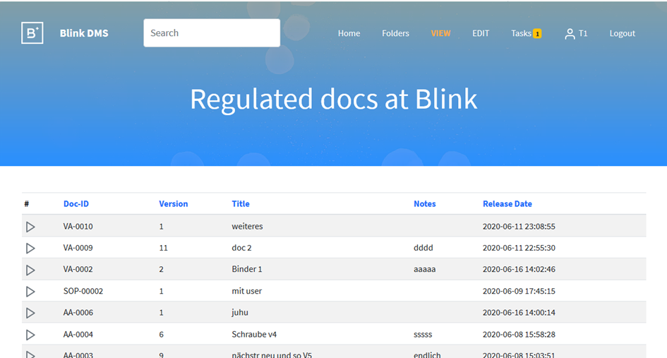
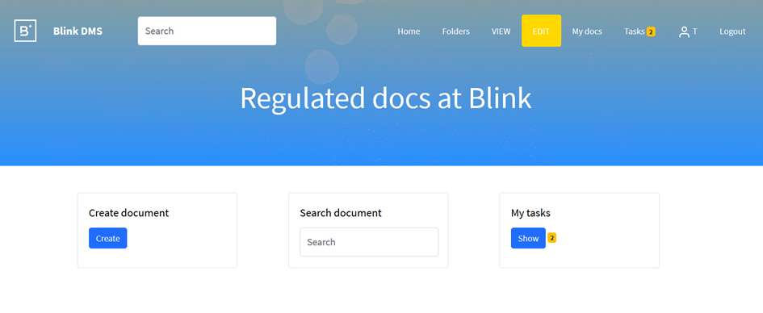
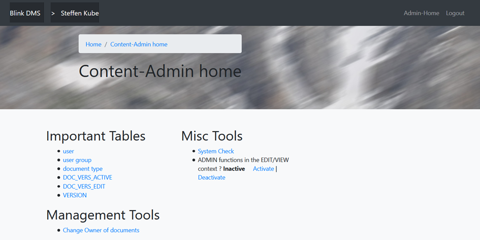

User’s Guide¶

Role system¶
- Following roles are available:
Editor (can create, edit, review, release documents)
Viewer (can view documents)
Admin (can do, what an editor can do + create/edit users, create root folders)
Folder.Edit (can create, edit folders)
QM (FUTURE: can release documents)
First steps¶
Root actions¶
go to table “document type”
create a new document type, e.g. “Order form”
create a new user for yourself with the role “Editor”, “Folder.Edit” and “Admin”
now you can create new users and documents with your personal account
logout
Create a new document¶
login as normal user
activate the EDIT area (see head menu)
click “Create document”
select/create a destination folder
select the document type and give a title
now the document object is created
upload documents, add reviewers, add links
Start a release process¶
the owner of the document can start a release workflow
go to the document
click “Start Release Workflow”
now the document cannot be edited anymore, but the workflow can be rejected by you
now the other reviewrs/releasers can login and do their review process
the last reviewer automatically releases the document
if configured in the “document type”, define the original Word document will be converted to to PDF (see Convert Word documents to PDF. )
the document is now visible in the VIEW area
Areas¶
EDIT area¶

- Scope:
allow create/modification of documents
allow creation/modification of folders
allow linking of documents to folders
see your active tasks
do reviews
VIEW area¶
- Scope:
allow search/retrieve released documents
Admin area¶

Main functions:
Create/modify users
Create/modify document types
Do a system check
Activate/deactive admin functions in the normal user context GUI
Reject any active workflows
Change Owners of documents
User management
- Useful activities:
Set login method=LDAP to activate ActiveDirectory authorization
Set “user is active“=0 to deactivate a user
Set roles to allow user activities
Set password
document type management
- Useful activities:
create new document types
define the “Doc code” : this is the prefix for the “Document ID”
define “Covert Word document to PDF” yes or no : automatically convert a *.docx document to PDF at the end of the document release; the users in the VIEW area just see the produced PDF document; the Word doc must contain VARIABLES, which will be replaced by the database data, like title, Document-ID, version and so on
System Configuration
- some important config in conf/config.py:
workflow.sign.password.need : 0 or 1 : defines if the user must give the password on an approval workflow (electronic signature support) this is required by FDA CFR820 Part11
email.send.allow : 0 or 1 : defines, if the system should send emails to the users, mainly in the workflow process
Scenarios¶
Start Approval-Workflow (A04)¶
Prerequisites:
- Following users are planned for approval:
test1 (editor of the document)
test2 (reviewer1)
test3 (reviewer2)
test4 (releaser1)
test5 (releaser2)
- Actions:
Start Workflow
if email-function is active on the system: All REVIEW-users get an email, the system allows them to review the document version
The review-users review
After last reviewer: all releasers get an email
All releasers do a review
Convert Word documents to PDF¶
- What to keep in mind:
there is an example for a proper WOrd template: see [GIT-PROJ]/doc/examples/Template_SOP_v1.docx
the PDF conversions takes places at the end of the release process
a VIEWER can only retrieve the PDF version, not the Word-version